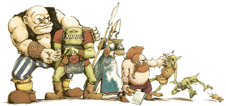
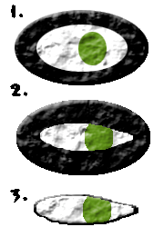

| |
Stark festési
útmutatója!

Nem nagyon húznám a cikk elejét
mindenféle eredetrõl és hasonlókról szóló
dolgokkal, általában úgysem érdekel senkit.
:-)
Alapok:
Gondolom aki ezt olvassa már
rendelkezik egy (vagy több) figurával, amit
szeretne kifesteni. Talán éppen össze is rakta
(ha esetleg több részbõl állt) kezdeti izgalmában.
Na ez esetben legelsõ tanácsom, hogy szedje szét,
mert sajnos az elsõ és igen fontos dolog, amit
illik egy kifestésre szánt figurával elvégezni,
az a sorjázás. Ezt valamiért szeretik
elfelejteni, pedig nincs kiábrándítóbb egy szépen
kifestett figurán, mint a sorja. A figurák a gyártási
technológiából adódóan szinte kivétel nélkül
sorjásak, néha nagyon, máskor kevésbé. Ezek a
két öntõforma illeszkedési pontatlanságai és
a beöntõnyílások maradékai miatt jönnek létre,
felesleges anyagmaradványok képében. Ez többnyire
csak egy, az egész figurán körben végighúzódó
csík, de akadnak kiálló, csápszerûek is. Célszerû
a sorját még a figura végleges összeragasztása
elõtt eltávolítani, mivel gyakran komoly erõhatást
kell kifejteni közben. Elég idegesítõ tud
lenni, ha emiatt szétesik a figura. Ehhez nélkülözhetetlen
eszköz egy tûreszelõ készlet és egy snitzer
(tapétavágó kés). Az ólomfigurákat könnyebb
reszelõvel sorjázni, a mûanyagot inkább a
snitzerrel érdemes. A mûanyag sorjája nehezen távolítható
el reszelõvel, mert ahelyett, hogy leesne és eltávolodna
a lereszelt rész, inkább csak "kiszõrösödik".
Ha viszont a snitzert használjuk, akkor kapargató
mozdulatokkal könnyen le lehet hámozni a sorját.
Ha nagyon vastag, akkor óvatosan le is lehet vágni.
Sajnos néha elég rossz helyeken is tud lenni
sorja, például a figura arcán keresztben.
Ilyenkor nincs mit tenni, óvatosan ki kell
reszelni onnan is, mert ott a legfeltûnõbb. Az
ilyen helyzetekben a snitzer éles, precíz hegye
is sokat segíthet. Én már találkoztam olyan
figurával is, aminek annyira csúnyán sorjás
volt az arca, hogy nem lehetett másképp korrigálni,
csak úgy, hogy a szeme és az orra elroncsolódott.
Elég kellemetlen és fõleg idegesítõ volt, de
még mindig meg lehetett menteni a figurát, a
festéssel korrigáltam a hibát, egyszerûen
odafestve a szemet. Persze ez nem tökéletes azért,
de sok mindent nem lehetett tenni.
Ha a sorjázás megvan, akkor lehet
kezdeni a figura összerakását, amennyiben több
darabból áll. Ha kis, emberméretû, figuráról
van szó, akkor némi pillanatragasztóval ez
gyorsan meg is van. Hagyjuk száradni azért egy
kicsit (minimum negyed órát), utána jöhet az
alapozás. Nagyobb figurák esetén ez kicsit
bonyolultabb tud lenni. Nekem a legnagyobb figurám
amit összeraktam egy Wood Elf Forest Dragon volt,
ami a barátnõm seregében teljesít szolgálatot.
Elég macerás volt, mivel az egész ólomból
van, nehéz és ennek a tetejébe még rossz
helyeken is van szétszabdalva. Ha simán összeragasztottam
volna, az elsõ kisebb erõhatás eltörte volna a
ragasztásokat. A megoldás ilyenkor, hogy az
ember vesz egy darab valamilyen nem túl vastag
(0.5 - 1 mm átmérõjû) de erõs drótot, amikbõl
kis egyenes darabokat vág. Ezek hossza a 1 centiméter
körüli legyen, de a ragasztandó részek lehetõségeitõl
függõen több vagy kevesebb is lehet. Az
illesztendõ felületekbe kis fúróval lyukakat
kell fúrni értelemszerûen úgy, hogy egymással
szemben legyenek ha a két darabot összeillesztjük
és egy ilyen kis darab drótocska beleférjen anélkül,
hogy eltartaná a felületeket egymástól. Utána
az egyik részbe egy drótdarabot be lehet
ragasztani úgy, hogy annyi lógjon ki, ami belefér
a másikba. Ha kicsit több az nem baj, még le
lehet vágni. Érdemes leellenõrizni. Kis száradás
után a másik figuradarabot is rá lehet
ragasztani, hogy a másikból kiálló drótdarabka
bepasszoljon ennek a furatába. Ez már elég erõs
lesz a ragasztó megkötése után, hogy bátran
ki lehet festeni a szétesés veszélye nélkül.
Néha kisebb figurákon is érdemes megcsinálni
ezt a csapolást, ha mondjuk a karja nehéz és kiálló
vagy hasonló letörésveszélyes dolog van rajta.
A mûvelet elég macerás, nekem a sárkány
összerakása órákba telt. Igaz, minden illesztési
pontba tettem csapolást és volt vagy 7-8. Ha
igazán igényesek akarunk lenni, akkor az illesztési
helyeknél keletkezõ apró réseket is ki kell töltenünk.
Ezt modellboltokban kapható "putty" nevû
dologgal tehetjük meg, ami egyfajta gitt és
elvileg összehúzódás nélkül szárad. Sajnos
ez nem mindig igaz. A GW-nek is van ehhez hasonló
készítménye "Green Stuff" néven, ami
valóban zsugorodásmentesen szárad és akár
dombormûveket is gyárthatunk belõle, ha elég
ügyesek vagyunk, de jóval drágább.
Az unalmasabb részén túl is vagyunk.
Most még ugyan nincs semmi szín a figurán, de már
készenáll a fogadására. A festés megkezdése
elõtt a figurát le kell alapozni, mert különben
a színek nem lesznek szépek és a festék
nehezebben tapad meg rajta. Ezt lehet ecsettel
vagy spray-vel csinálni. Ha komolyabban elszántad
magad a figurafestésre mindenképp javaslom, hogy
egy sprayt szerezz be, mert nagyságrendekkel könnyebb
és kényelmesebb vele alapozni. Amikor utoljára
vettem, nem volt éppen olcsó egy alapozó-spray,
de az árat bõven megéri, elég olyan ötven
figurára. Spray-vel az alapozó réteg
egyenletes, meg folyásmentes lesz, míg ezt
ecsettel elég körülményes és hosszadalmas
megcsinálni. Ha nincs spray jó lesz az ecset is.
Nem túl vastag rétegben vigyünk fel a figurára
valamilyen színt úgy, hogy ne maradjon szabadon
ólomfelület (vagy mûanyag), lehetõleg minél
egyenletesebben. Zömmel fehéret vagy feketét
szoktak használni alapozásra, attól függõen,
hogy világosabb, vagy sötétebb összhatást
akarnak elérni a figurán. Például Káosz figurákat
általában érdemes feketével alapozni, Elfeket
fehérrel. Spray-vel a helyzet némileg egyszerûbb.
Fogj egy pár figurát, amit le szeretnél
alapozni és egy elhasznált papundekli dobozt.
Valahol szabadban, erkélyen, kertben, de mindenképp
nyitott ablaknál és jó fényviszonyok mellett
állítsd a dobozt fenekével felfele, erre
mehetnek a figurák legalább 10 centi távolságra
egymástól. A flakont 15-20 centi körüli távolságban
tartva lehet fújni a figurákat. A távolságot
úgy érdemes tartani, hogy nehogy megfolyjon a
festék, de a mélyebb részekre is kerüljön.
Nem kell mindenáron erõltetni, hogy a mélyebb részeken
is ugyanolyan réteg festék legyen mint a többin,
azt úgysem lehet elérni anélkül, hogy a kiállóbb
részeken ne vastagodjon meg túlságosan. Késõbb
ecsettel lehet korrigálni a mélyen fekvõ festék
nélkül maradt részeket. Elsõre talán
bonyolultnak tûnik, de nem az. Ha spray-vel
alapozunk érdemes a figurákat a talpukba beleállítva
lefújni. A figuránk
most már készen áll a tényleges festésre.
Az eszközök:
Kezdeném
az eszközökkel, mert a reagálásokból úgy tûnt,
erre is nagy az igény. Felteszem, hogy maximalisták
vagyunk és mindent a legjobbra/legszebbre szeretnénk
csinálni. Ennek megfelelõen elég sok
mindenre szükségünk lesz. Elsõként az elõzõ
részben említett tûreszelõkészlet fog
kelleni. A leghasznosabbak a lencse (vagy fél
lencse) és a háromszög keresztmetszetûek. A
lencse alakúval görbe felületeket, a háromszöggel
pedig laposakat lehet reszelni. Ezek még azért
is jók, mert a hajlatokban gyakran felgyûlõ
sorját könnyen és szépen el lehet velük távolítani.
Ha a hajlat szöge kisebb mint a mi reszelõnké,
akkor kell a tapétavágó kés, aminek jó éles
a hegye. Ezzel óvatosan ki lehet vágni a sorjákat
a nehezebben hozzáférhetõ helyekrõl is. Mivel
viszonylag vékony fémbõl van a pengéje, könnyen
elpattanhat a hegye, ekkor jobb, ha nem spórolunk
és letörjük a sérült részt, mert nekünk is
könnyebb és a figura is szebb lesz. A reszelõk
és a kés nem túl nagy összegbe kerülnek és bármelyik
szerszámüzletben lehet venni.
Ragasztóból kelleni fog
pillanatragasztó és valami olyan ragasztó, ami
nem szárad túl gyorsan és folyik (tehát nem
valami maszat). Nekem egy az UHU ragasztók közül
vált be a legjobban. Nem tudom pontosan a nevét,
de kinézetre egy bordó színû tartály, amibõl
hosszú, vékony fémcsövecske lóg ki. A csõ azért
is jó, mert nehezen hozzáférhetõ helyekre is könnyen
be lehet nyúlni vele és oda ragasztót nyomni.
Modellboltokban kapható egy hasonló, kék színû
tartállyal, asszem valami Humbrol termék de nem
biztos, mindenesetre ez is nagyon megfelel a célnak.
Pillanatragasztót már száz Forint alatt is
lehet venni, az tökéletesen megteszi. A másik
sem több három-négyszáz pénznél. Bármilyen
papírboltban mindkettõ megtalálható.
Ecsetek. Ebbõl is kell egy pár, legalább
egy vékony és egy vastagabb. Az ecsetek méretét
jobb helyeken számokkal jelölik, minél kisebb
annál vékonyabb az ecset. Nulla alatti méreteket
több nullával jelölik, nekem a legvékonyabb
ecsetem öt nullás. Sajna ez valószínûleg nem
szabványos, mert ahány gyártó, annyi méret,
így a legjobb a vizuális mértékvétel (értsd:
ránézel, ha jó, jó, ha nem, nem ;-). Ennek a
tetejébe a GW kitalálta a saját méretrendszerét,
ami nem számokból, hanem megnevezésekbõl áll.
Olyanok mint "Large Detail Brush",
"Detail Brush", "Fine Detail Brush".
Ez a három normál ecset létezik náluk, értelemszerûen
a large a legnagyobb, a fine a legkisebb. Sajnos a
fine ecsetük is jóval nagyobb, mint egy rendes
hasonló árú mûvészecset nullás mérete, de
ismerek olyat akinek ez elég. Nekem általában
nem. Egyébként az én véleményem az, hogy bár
a GW által gyártott dolgok általában elég jó
minõségûek, ecsetügyben nem alkottak valami
nagyot. Egyetlen ecsetük van amit szívesen használok
és jó, az pedig az ún. Drybrush ecset (késõbb
lesz róla szó mire való). A többi is használható,
de relatíve hamar elvesztik a tartásukat, hegyüket,
"kiszõrösödnek". Plusz nincs belõle
olyan vékony, ami ideális lenne például szemek
festéséhez (legalábbis legutoljára még nem
volt, ha mostanra elõrukkoltak vele, akkor bocs).
Én az ecseteimet zömmel egy mûvészboltban
szerzem be. Itt rengetegféle ecsetet lehet kapni
különbözõ márkákat, méreteket, formájúakat.
Olyan 3-500 forint között nagyon jó minõségû
és tartós ecseteket kínálnak egészen vékony
méretekben is. Ha most kezdenék és a költségeket
is le szeretném szorítani amennyire lehet, akkor
vennék a mûvészboltban egy 2-es és egy 00-s
ecsetet, plusz egy "Small Drybrush"-t a
Citadel ecsetek közül. A 2-es a nagyobb felületek
festésére, a 00-s a kisebbekre, apró részletekre
és szemekre , a "Small Drybrush" meg a
szárazecsetes technikát igénylõ dolgokhoz. Talán
még egy 1-es is jól jöhet, de az nem olyan égetõ.
Ez együttesen nem túl nagy pénz és akkor már
tényleg jó ecseteink vannak
Néhány apróság ami még kellhet a
figurák finomításához, szépítéséhez. A
festés elõtt lehet szükség még az úgynevezett
"putty"-ra (ezen a néven kapható
modellboltokban). Ez egy olyan gittszerû anyag,
ami elvileg zsugorodásmentesen szárad és arra
lehet használni, hogy az illesztéseknél
keletkezõ réseket eltömjük (száradás után
érdemes kicsit megreszelgeni, hogy egyenletes
legyen). Az ilyen rések is elég csúfan mutatnak
egy kifestett figurán. Ára nem túl drága és
egy tubussal egy életre elegendõ mennyiséget
kapunk :-). Ehhez hasonló természetesen létezik
GW gyártmányban is, amit az egyszerû "Green
Stuff" névvel illetnek a színére utalóan.
Ez egy kétkomponensû epoximassza, ami valóban
nem zsugorodik repedezik száradás közben.
Annyira jó, hogy ha mondjuk valami Marine vállapjára
dombormûvet akar ez ember készíteni, ezzel
megteheti. Sajnos ez kevesebb a mennyiséget
tekintve, de árban jóval több. Aztán a
figuratalpak igényes elkészítéséhez szükség
lehet homokra, apró kavicsra, mûfûre és amit
az ember elképzel még az adott figurához. A
homokot és a különbözõ méretû kavicsokat
akvarista üzletben lehet beszerezni. Általában
negyedkilós kiszerelésben adják, ami szintén
rendkívül hosszú idõre elegendõ. Akár elég
többen egyet-egyet venni, bõven jut mindenkinek.
Mûfüveket modellboltban érdemes nézni. Létezik
olyan, ami már lapra van ragasztva, pár négyzetmétert
lehet egyben venni. Ez inkább terepasztalok készítéséhez
jó, de akár ki lehet belõle vágni talp méretû
darabokat. Ami hasznosabb az a porszerû mûfû.
Modellboltokban lehet sokfélét találni olcsón,
de a GW-nek is van sajátja. Természetesen jóval
drágább, bár kétségkívül jobb minõségû
is. Az olcsóbb modellboltos fajta néha kifakul a
fénytõl, töredezik, úgyhogy én inkább csak
az úgynevezett sztatikus mûfüvet használom,
amit szintén modellboltban lehet kapni. Ez olyan,
mintha valódi fûszálak lennének. Valamiféle
apró szálakból van, míg a hagyományos mûfû
darált parafából (a jobbak), vagy faforgácsból
(a kevésbé jók), festéssel készül. Persze más
hatású a kettõ, úgyhogy ha a sztatikus fû nem
felel meg az elképzeléseimnek, akkor inkább gyártok
sajátot, de errõl majd késõbb írok. Kellhet még
egy kis hígító az ecsetek tisztításához.
Festékekbõl kétségkívül a
legjobbak a Citadel/GW termékek, mindenképp
javaslom. Próbáltam más típusokat is, de túl
vastagon takarnak, nem elég jól terülnek, nehézkes
a hígításuk és büdösek. :-) A Citadel festékek
vízzel hígíthatóak, remekül keverhetõek, szép
simán terülnek. Természetesen néha elõfordul,
hogy ezek közül valamelyik nem teljesül, fõleg
az öregebb, illetõleg a nem jól lezárt festékeknél.
Sõt egyszer elõfordult velem az is, hogy az újonnan
vett festék használhatatlanul híg volt, de
ennek ellenére meg vagyok elégedve velük.
Sajnos elég drágák és a metallic - fémes árnyalatok:
ezüst,arany, bronz, stb - méginkább. Kezdethez
viszont létezik festõkészlet, egy ecsettel és
öt mûanyag figurával megvehetõ. Meg kell említsem
viszont, hogy tereptárgyakhoz nem ajánlom a
Citadel festékeket, mert ahhoz túl jók és drágák,
a más olcsó festékek nagyon jók erre. Alapozónak
is Citadelt ajánlok. Persze az alapozást
ecsettel is meg lehet csinálni, de aki kipróbálja
mindkettõt, az nem akar majd többet ecsettel
alapozni. :-) Kezdetnek el lehet hagyni a sprayvásárlást,
de ha van még annyi felesleg, akkor egy fehéret
érdemes beszerezni és hosszú távon egy feketét
is. Kelleni fog egy vizesedény, meg sok papírzsepi,
vagy más törlõalkalmatosság, amibe az
ecseteket lehet törölni (lehetõleg eldobható
legyen, mert kimosni elég nehézkes lesz) . Én
papír zsebkendõt használok. Nagyjából azt
hiszem sikerült felsorolni a fontosabb dolgokat,
térjünk rá a lényegre. :-)
A festés:
Nehéz eldönteni, hogy hol is kezdjem. Elsõre
azt gondoltam, hogy ott kezdem el, ahol általában
én kezdek el egy figurát, de nem biztos, hogy az
a legtaktikusabb, mert én általában a szemekkel
kezdek. Azért teszem ezt, mert általában mélyen
fekszik és késõbb, ha már az arcot
megfestettem idegesítõ tud lenni ha mellécsúszik
az ecset. Márpedig a szemeknél ez gyakrabban elõfordul.
Ezért ha legelõször festem ki, akkor nem baj,
ha melléfestek, még könnyen korrigálható. A
szemfestést sokan a legnehezebb dolognak tartják,
de szerintem ennél vannak sokkal nehezebb dolgok
is (pl: drágakövek).
|
Itt van ez a szép ábra. Jobb
oldalon a festés lépései vannak. Szóval
ha még a figura arcán nincs semmi festés
és feltesszük, hogy fehérrel van
alapozva, akkor az elsõ lépés, hogy a
szem körvonalait megfestjük (1).
A festéket picit vízzel hígítsuk
fel, hogy jobban rákenõdjön a figurára.
Ezt tapasztalatból lehet majd megérezni,
hogyan jó. Nem baj ha a szemtõl nézve
kifelé mellé- megy (mint az ábrán is
látható), csak befelé igyekezzünk
nem melléfesteni, a fehér területet
érintetlenül hagyni és a lehetõ
legjob- ban szem alakúra formálni. Ha
nem sikerül, akkor óvatosan fehérrel
a szeme fehérjét újra kell festeni és
utána a szem alakját feketével megint
megpróbálni megfesteni. Sajnos ezt nem
szabad túl sokszor elrontani (három már
gyakran sok), mert nagyon megvastagszik
a festék. |
 |
Ezután egy óvatos ecsetvonással az íriszt
behúzzuk (2). Ezt érdemes nem
elrontani, de nem is nagyon nehéz. Itt sem baj,
ha alul, felül mellémegy a festés, sõt a
legnyugodtabban helyezd az ecsetet a szem felé
majd húzd le akár jóval lejjebb a leendõ alsó
szemhéjnál. Nem baj ha mellémegy, úgyis javítani
kell. Ha megvan, belül a szem jól néz ki (a
2-es képhez hasonlít), akkor lehet kezdeni a külsõ
javítást. Fehérrel körbefestjük úgy, hogy a
szem körül egy vékony fekete csík maradjon (3).
Ha az ecsetet a lehetõségekhez mérten a szemhéjjal
párhuzamosan húzzuk, akkor nagyon szép
egyenletes vonal lesz belõle. Ezt nem lehet
mindenhol megcsinálni, többnyire hozzáférési
nehézségek miatt. Nem nagyon lehet erre általánosan
jó módszert mondani, igyekezni kell minél precízebbnek
lenni.
Ha ezzel megvagyunk, akkor még mindig
elgondolkodhatunk milyen színeket akarunk majd a
figurán látni. A további mélyebben fekvõ részekkel
kezdve elkezdhetjük felvinni ezeket a színeket.
Az olyan helyeket is át kell festeni, amiket az
alapozóval megegyezõ színûnek szánunk. Az arc
kifestését nagyon óvatosan a szem környékével
kezdjük.
Még mielõtt nagyon elmélyedek a különbözõ
technikákban, néhány szó a festékrõl. Érdemes
a kívánt színbõl valamire kivenni egy kicsit,
majd a tégelyt visszazárni, a kiszáradás elkerülése
végett. Én egy régi vízfestékes doboz tetejét
használtam sokáig, egy ideje pedig az említett
mûvészboltban beszerzett mûanyag palettában
dolgozom. Általában a tégelybõl kivett festék
túl sûrû ezért érdemes hígítani kicsit,
mielõtt a figurára felvisszük. Elõbb utóbb a
tapasztalatokból kialakul mennyi vizet kell hozzátenni,
de azért megpróbálom megfogalmazni: Annyira
kell felhígítani, hogy a szín még ne legyen átlátszó
(például ez sárgánál már nem is mûködik),
de könnyen lejöjjön az ecsetrõl. Minél sûrûbb
a festék annál nehezebb a figurára kenni, egyre
egyenetlenebb lesz, nem terül el rendesen. Ha túl
híg, akkor meg beül a lyukakba, redõkbe, mélyebb
részekbe. Valahol a kettõ között kell egy jó
középutat találni, ez viszont festékrõl festékre
változó lehet. Az alapszínek felvitelénél
figyelembe kell venni a késõbbi árnyékolást.
Ha például pont olyan színhatást akarunk a
festés végére, mint amilyen az üvegcsében
van, akkor (ha árnyékolni is akarunk majd) célszerû
egy sötétebb árnyalatot felvinni elõször és
majd a késõbbiek során ezt világosítani. A sötétebb
árnyalat elérése többféleképpen történhet.
Vagy feketével illetve más sötét színnel
keverjük (a piros például barna lesz a feketétõl),
vagy van a készletünkben olyan másik szín ami
alkalmas ennek egy sötétebb árnyalataként.
Ilyen párosítás lehet például a Regal Blue/Enchanted
Blue, vagy a Bestial Brown/Snakebite Leather.
Ehhez mondjuk jó sok különbözõ szín kell. Az
árnyékolás mikéntjét majd késõbb kifejtem.
Érdemes minden páncélt elõször feketére
festeni, kivéve, ha ténylegesen egy fényesre
pucolt csillogó páncél benyomását akarjuk
kelteni.
Az egyik egyszerû, de látványos
technika, ami a páncélokhoz is kelleni fog, a
drybrushing, azaz szárazecsetelés. Ez
gyakorlatilag semmi más, mint amit jelent, az
ecsetet szárazra kell törölni és úgy festeni
vele. Leginkább rücskös felületeken jön ki jól
a hatása, mint például a láncing. A láncinget
feketére kell festeni, ügyelve, hogy minden pici
lyukacska, ami a láncok közötti rést jelképezi,
teljesen fekete legyen. Se az alapozás, se ólom
ne látsszon ki. Ezután valamilyen ezüst színt,
például Mithril Silvert, vagy Boltgun Metalt
veszünk elõ és belemártjuk az ecsetet. Utána
egybõl le is kell törölni róla, amit lehet,
hogy nagyjából száraz legyen. Ez elég fura és
nehéz elhinni, hogy van értelme, pedig van. :-)
Ezzel az ecsettel csak a felületet érintve, az
ecsetet megdöntve, hogy az oldala érje lehetõség
szerint, jól "átkenegetjük". A festék
így csak a kiálló részekre kerül rá, amitõl
nagyon jó árnyékhatás keletkezik. Nem csak páncélokat
lehet ezzel a módszerrel megcsinálni, hanem például
hajat, szakállt, szõrt (persze nem ezüsttel
:-), izmokat lehet így nagyszerûen árnyékolni.
Egyszer egy félmeztelen törpét teljes mértékben
ezzel a módszerrel árnyékoltam és egész jó
lett. A módszer eléggé roncsolja az ecsetet, fõleg
ha már tényleg nagyon száraz és erõsen kell
nyomni, hogy jöjjön róla festék, úgyhogy érdemes
egy elhasználódott ecsetet használni, ha van.
Erre valók az emlegetett Drybrush ecsetek a GW-tól,
ami vastag és tömpe szõrrel rendelkezik, így
sok festék fér bele és némileg strapabíróbb
is.
Árnyékolás:
A fenti módszerrel már egyfajta árnyékolást
csináltunk. Árnyékolni természetesen csak az
alapszínek felvitele után érdemes, mert ha
lefestünk egy részt és szépen meg is árnyékoljuk,
majd egy másik rész festése közben véletlenül
csúful belehúzunk, könnyen a figura sarokba hajításához
vezethet. Mielõtt rátérnék más módszerekre
az árnyékok mibenlétérõl pár szó. Kétféle
árnyékhatást különböztet meg a figurafestõ
társadalom: a mélyárnyékot (lowlight) és a
magas árnyékot (highlight). Értelemszerûen a mélyárnyék
a mélyen fekvõ részek sötétebb árnyalatait,
míg a magas árnyék éppen ellenkezõleg, a
magas részek világosítását takarja. E kettõ
szerint a különbözõ módszerek két csoportba
oszthatók. A fentebb említett szárazecsetelés
tipikusan egy highlight technika, mert a lényege,
hogy a magasabban fekvõ részek kapjanak világosabb
színt, míg a következõ az lowlight lesz és a
sötétebb színárnyalattal kezdés is ilyen.
Ehhez szükség van egy speciális festéktípusra,
amit wash-nak hívnak (nevezik tintának vagy
bemosónak is). Ez egy híg, szinte vízszerû
festék, melynek célja, hogy az árnyékolni kívánt
felületre kenve, befolyik, beül a mélyebb részekbe,
anélkül, hogy a magasabban fekvõ színeket
nagymértékben megváltoztatná. Azonban ha ténylegesen
végigkenünk vele mindent, kicsit elkerülhetetlenül
lesötétíti a magasabban fekvõ részeket is. Azért
nagyon jól használható, ha kombináljuk mondjuk
a szárazecseteléssel. Vegyünk egy arcot, amit
elõzõleg lefestettünk Bronzed Flesh-el (bõrszín),
a szeme is megvan már és természetesen már
mindenhol másutt fent vannak az alapszínek is.
Ehhez a legjobb lesz a Flesh Wash vagy Chestnut
Wash. Bár ezek a Wash-ok elég hígak néha mégis
higítani kell õket, különben túl erõsen színeznek
és éles színhatárokat hagynak, ami csúf. :-)
Elfelejtettem mondani korábban, hogy a festékeket
használat elõtt jól fel kell rázni és ez
fokozottan érvényes a Wash-okra. Mielõtt használjuk
õket jól rázzuk fel, mert nagyon le tudnak ülepedni.
Óvatosan, nem túl szottyos ecsettel a mélyebb részekre
kenjünk a tintából úgy, hogy lehetõleg a
tinta határa ne legyen túl éles. (Vigyázzunk
mert ha úszik az ecset a tintában, akkor a
figura felületéhez érve egy pillanat alatt szétfolyik
mindenhová). Ha nincs túl sok tinta az ecseten,
akkor ügyes, a mélyebb rész belseje felé haladó,
mozdulatokkal a határokat jól el lehet tompítani.
Nem baj ha marad, csak ne legyen túl vastag, mert
azt nehéz kijavítani. Ezt hagyjuk megszáradni,
majd az élesen maradt határokat az eredeti színnel
javítsuk ki óvatosan (itt Bronzed Flesh). Inkább
egy kicsit hígabb legyen a festék, hogy nehogy
visszájára forduljon a dolog és így alkossunk
egy másik éles színhatárt. Ha ez is megvan egy
világosabb árnyalattal, például Bronzed Flesh
+ kis Skull White, meg szárazecsetelhetjük óvatosan.
Elsõre nehéznek hangzik és tényleg igényel némi
gyakorlatot, hogy az ember ráérezzen, azért ez
még mindig nem olyan veszélyes. ;-)
Már korábban akartam szólni a melléfestés
jelenségérõl. Mindenki megnyugodhat, ez egy
olyan dolog, ami a legjobb festõknél is elõfordul.
Gyakran az okozza, hogy a figura bizonyos részei
nehezen hozzáférhetõek és ahogy az ember próbálkozik
benyúlni óhatatlanul is melléfest. Azonban, ha
elég gyorsak vagyunk és a festék nem volt túl
száraz, akkor még segíthetünk a dolgon. A festés
folyamatából adódik, hogy a festék legtöbbször
csak a figura egy kis részén nedves és mint
ilyen oldható (az akril festékek száradás után
vízben nem oldhatóak többé). Ezt kihasználva
egy esetleges melléfestés esetén gyorsan az
ecsetünket a vízbe mártjuk és anélkül, hogy
leitatnánk a melléfestésre egy nagy csepp vizet
rakunk. Ezzel meggátoljuk a száradást és ha a
festék még nem száradt meg teljesen, fel is
oldhatjuk. A vízcseppet óvatosan egy zsepi sarkával
letörölve a melléfestett folt (zömmel) eltávolítható.
Az esetek többségében még ez bejön, rosszabb
estben csak enyhíti a színt, de már az is sokat
segíthet. Ha például egy sárga felületre
feketével odapöttyentünk és nem sikerül a
fent említett módszerrel eltávolítani, akkor
azt bizony nehéz szépen kijavítani. Elõször
le kell fehérrel festeni és utána jöhet a sárga,
mert a sárga fedõképessége elég rossz. Ettõl
viszont gyakran rücskös lesz a festék, ami csúf.
:-) (A sárgák és néhány más szín elég híg
festékek, valódi színüket csak fehér alapon
lehet kihozni).
Mindazon technikák amiket leírok, és
leírtam, olyanok, hogy a legritkább esetben
sikerülnek elsõre. Minél többet gyakorol az
ember, annál jobban átérzi, milyennek is
kellene lennie, hogyan is kellene csinálni.
Emiatt érdemes ólomfigurán próbálkozni, mert
azt könnyû lemosni ha nem sikerül. Nem kell mást
tenni, mint beledobni egy befõttesüvegbe és
mezei észter higítóval leönteni hogy ellepje.
Hagyni kell kicsit ázni (mondjuk pár órát) és
egy elhasznált fogkefe segítségével le lehet dörzsölni
a festéket. (Ez elég mocskos mûvelet tud lenni,
érdemes valami munkásruhát felvenni hozzá.) A
mélyebb részekrõl nehezebb kikotorni a festéket,
de kitartó munkával egész jó eredményt lehet
elérni. Ha a fogkefével mégsem sikerül
kiszedni valahonnan a festéket, akkor egy
vaskosabb tûvel, vagy valami hasonlóval a lehetõ
legjobban ki kell vakarni. Vigyázzunk, hogy a végeredményen
ne maradjanak kiálló festékforgácsok. Az nem
baj ha itt-ott marad egy kicsi a mélyebb részeken,
de az lehetõleg legyen sima. Ezután jól le kell
törölgetni, kicsit száradni hagyni és jöhet
az új alapozás. Ha tényleg csak a próbálkozás
miatt kezdünk hozzá egy figurához, akkor olyat
érdemes választani amit könnyû lemosni: Kevés
rücskös, redõs, részletes felülettel, inkább
nagy sima részekkel. Sajnos azért a lemosásra
igaz, hogy minél többször csináljuk egy figurán,
annál több maradék ragad meg rajta és egy idõ
után megvastagszik a mélyedésekben, elrontva a
finom részleteket. Szóval nem érdemes nagyon
sokszor csinálni.
Térjünk vissza az árnyékoláshoz. Már
említettem a drybrush technikát és a washokat.
Ha ezt a kettõt valaki nagyon jól megtanulja
használni, akkor akár gyakorlatilag nincs is szüksége
többre, ezekkel is nagyon szép eredményt lehet
elérni. Egy kivétel azért biztosan van, ahol
nem mindig célravezetõ ezeket alkalmazni. A
nagyobb sima felületek, például páncélok,
pajzsok árnyékolásához érdemesebb egy
nehezebb módszert alkalmazni, amivel szebb eredményt
lehet festeni. Nem olvastam vissza a korábbi részeket,
de úgy emlékszem, említettem a "building-up"
technikát, amikor a sötét árnyalat felõl a
világos felé haladva egyre keskenyebb csíkokat
festünk az árnyékolandó felületre. Ezt
gyakran alkalmazzák nagymennyiségû figura festésénél.
Ritkán fordul elõ Mordheimben, de vegyünk például
egy 10 fõs Space Marine osztagot. Színben
ugyanazok, néha még formára is. Az illetõ
lealapozza és lefesti az alapszínekkel mindet.
Az árnyékolást csak akkor kezdi, ha már
mindegyiken rajta vannak a színek. Miután ez
relatíve hosszadalmas és unalmas mûvelet, ráadásul
nem mindig érdemes a legutolsó golyófogó katonát
fullosra kifesteni (hozzá kell tegyem én nem pártolom
ezt az elvet), ezért vagy egyáltalán nem árnyékolja
õket, vagy egy egyszerûsített módszert
alkalmaz. Ez pedig általában az említett "bulding-up"
módszer leegyszerûsítése két árnyalatra.
Gyakran ennek a kettõnek is az egyikének az
alapszínt veszik, így végül is csak egy világosabb
csíkot húznak a magas árnyék helyére. Ez nem
nagyon szép, de egy tucatfigurának megteszi.
Természetesen ilyet újságban nem nagyon látni
("building-up"-ot se nagyon :-), bár az
elsõ Mordheimmel is foglalkozó WD-okban volt
egy-két példa rá.
A "building-up"-nak egy
nehezebb verziója, amikor az árnyékolást úgy
próbáljuk csinálni, hogy ne maradjanak éles színhatárok,
hanem a színátmenet folytonos legyen. Elég nehéz
szóban megfogalmazni hogyan is kellene az ilyet
csinálni, de azért csak megpróbálom.
A mûveletet
elég gyorsan és pontosan kell csinálni, ebben
rejlik a nehézsége is egyben. A lényege, hogy
nem hagyjuk megszáradni a felvitt festéket,
hanem egybõl a világosabb árnyalattal is rámegyünk
és a két szín közti határt igyekszünk
eldolgozni. Érdemes elõre kikészíteni a szükséges
festékeket és tiszta papírtörlõt, mert
gyakran fog kelleni. Én úgy szoktam elõkészülni,
hogy kiveszek a világosítandó színbõl is és
a világosítóból is (ez gyakran fehér) egy kis
tálkára és közel veszem a vizet és a papírzsebkendõt.
Elõször az eredeti színbõl kenek egy kicsit hígabb
réteget az árnyékolandó területre, majd
gyorsan jöhet a világosabb. Kikeverek az
eredetinél egy kicsit világosabb színt (ha még
nincs kész, nem baj, ha elég gyors az ember,
akkor nem szárad meg a festék a figurán. Ez fog
is kelleni, mert az egyre világosabb árnyalatok
felé haladva már nem lesz idõ elõkészülgetni
;-) és rámegyek úgy, hogy a még nedves festékeket
a figura felszínén keverem el éppen csak
annyira, hogy ne maradjon csúf határ. Sok
gyakorlás és rutin kell hozzá, de megéri. Nem
könnyû úgy megcsinálni hogy tényleg
egyenletes legyen, de már elõre biztosítok
mindenkit, aki az elsõ pár próba után a
sarokba akarja hajítani a figurát, ne tegye,
mert lehetséges! :-)
Nos azt
hiszem egyelõre ennyi elég ahhoz, hogy a téma
iránt érdeklõdõk belekezdhessenek elsõ figuráik
kifestésébe. sok sikert hozzá!
írta: Stark
|
|